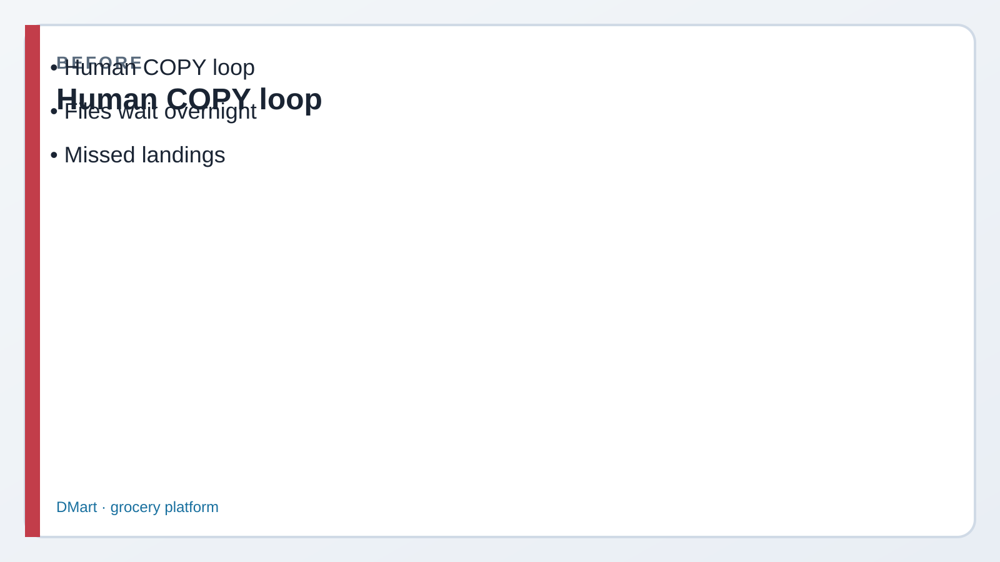
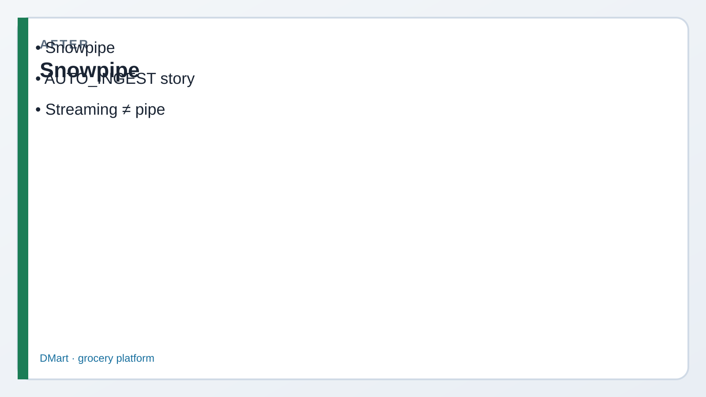

Read every Teach first section before you copy SQL.
Lab 10 was you running COPY INTO by hand. Today Alpine gets a pipe —
a named object that owns a COPY statement and can wake up when new files land.
Also: Snowpipe Streaming (COF-C03) vs classic file-based pipe.
1
Picture first. Look at BEFORE/AFTER → read the comic → then run tiny SQL.
If a paragraph feels heavy, skip to the next comic strip — Dev explains it out loud for you.
Business problem
Riley drops CSVs into cloud storage all day. Kai keeps asking “did anyone run COPY?”
Morgan hates idle warehouse credits for a human who forgets to load files.
Solution you will build
A PIPELINE landing table, a CREATE PIPE … AS COPY INTO … object, and a clear story for
AUTO_INGEST notifications vs manual ALTER PIPE … REFRESH.
Plus see-cards that separate classic Snowpipe (files) from Snowpipe Streaming (rows).

Before Manual COPY loop.

After Snowpipe (+ Streaming ≠ AUTO_INGEST).
Episode 11 · Start here
Riley: “I’m tired of hitting Run on COPY.”
RileyEngineer — pipelines
Files land every few minutes. If I’m in a meeting, Alpine’s dashboard is stale. Can’t Snowflake just… notice?
DevCoach — explains why
That’s Snowpipe. You create a pipe that is a COPY statement. Cloud storage pings Snowflake; the pipe loads without you babysitting a warehouse schedule.
Exam picture: stage + files → pipe (COPY) → table. Streaming is a different door.
See it — COPY vs pipe vs streaming
You run it
Manual COPY (Lab 10)
You (or a Task) execute COPY INTO. Uses a virtual warehouse.
File on stage → you click Run → rows in table
Object owns COPY
Classic Snowpipe
Named pipe wraps COPY. Serverless compute. Best for files landing on blob storage.
CREATE PIPE … AS COPY INTO …
AUTO_INGEST
Cloud notifies Snowflake
S3/GCS/Azure events → queue → pipe wakes. No cron COPY for each file.
New orders_*.csv → event → load
COF-C03
Snowpipe Streaming
Rows via SDK/API — not file→stage→COPY. Sub-second ingest for clickstream/IoT.
App writes rows → table (no pipe object)
Flow — where the pipe sits
1 · FilesCloud / stage@LAB.STG_INBOUND
2 · PipePIPE_ORDERS_AUTOowns COPY statement
3 · TableSTG_ORDERS_LANDINGPIPELINE schema
Before Step 1
Kai: “Is the pipe a warehouse?”
KaiAnalyst — still learning
So I create a bigger warehouse and that’s how Snowpipe goes faster?
DevCoach
Nope. Classic Snowpipe uses serverless compute — billed as Snowpipe credits, not your WH_CORE_XS size. Don’t resize the warehouse to “speed up the pipe.”
1 Landing table in PIPELINE
What this does: Creates the table the pipe will load into — Alpine’s “inbox” for order files.
SQL · landing table
USE ROLE ROLE_CORE_LAB_ADMIN;
USE WAREHOUSE WH_CORE_XS;
USE DATABASE ALPINE_RETAIL;
USE SCHEMA PIPELINE;
CREATE OR REPLACE TABLE PIPELINE.STG_ORDERS_LANDING (
ORDER_ID NUMBER,
CUSTOMER_ID NUMBER,
ORDER_TS TIMESTAMP_NTZ,
AMOUNT_USD NUMBER(10,2),
STATUS STRING,
LOADED_AT TIMESTAMP_NTZ DEFAULT CURRENT_TIMESTAMP()
);
✓ Table exists under PIPELINE — empty until files load
Before Step 2
Morgan: “Will AUTO_INGEST work on my trial?”
MorganManager — cost & deadline
I need the exam answer, not a three-week AWS ticket. What do we actually run today?
PriyaYou
We CREATE PIPE … AS COPY so I can SHOW/DESC it. AUTO_INGEST = TRUE needs a real notification channel — I’ll say that story out loud even if we leave it FALSE in the lab.
2 CREATE PIPE that wraps COPY
What this does: Defines the pipe object. AUTO_INGEST = FALSE still creates a real pipe you can describe; prod would flip TRUE after wiring S3/SNS (or Azure/GCP equivalents).
SQL · create pipe
CREATE OR REPLACE PIPE PIPELINE.PIPE_ORDERS_AUTO
AUTO_INGEST = FALSE
COMMENT = 'Demo pipe — wire notifications for AUTO_INGEST'
AS
COPY INTO PIPELINE.STG_ORDERS_LANDING
(ORDER_ID, CUSTOMER_ID, ORDER_TS, AMOUNT_USD, STATUS)
FROM (
SELECT $1::NUMBER, $2::NUMBER, $3::TIMESTAMP_NTZ,
$4::NUMBER(10,2), $5::STRING
FROM @LAB.STG_INBOUND
)
FILE_FORMAT = (FORMAT_NAME = 'LAB.FF_CSV_STD');
If @LAB.STG_INBOUND or the file format is missing, run the stage bits at the top of sql/11_snowpipe.sql first (Lab 02 created them).
✓ Pipe created — definition stores the COPY
3 Prove the object + status
What this does: Exam-friendly SHOW/DESC + pipe status. Manual catch-up uses ALTER PIPE … REFRESH when AUTO_INGEST is off or events were missed.
SQL · show / status
SHOW PIPES LIKE 'PIPE_ORDERS%' IN SCHEMA PIPELINE;
DESC PIPE PIPELINE.PIPE_ORDERS_AUTO;
SELECT SYSTEM$PIPE_STATUS('PIPELINE.PIPE_ORDERS_AUTO');
-- Catch-up when not using cloud events:
-- ALTER PIPE PIPELINE.PIPE_ORDERS_AUTO REFRESH;
✓ You can name the pipe, its COPY target, and how status is checked
Before Step 4
Streaming is not “a faster pipe”
RileyEngineer
Exam distractor: “Snowpipe Streaming means AUTO_INGEST on a pipe.” That’s wrong, right?
DevCoach
Right. Streaming = row API/SDK path. Classic pipe = files on a stage + COPY. Same product family, different ingest shape. Say both on COF-C03.
4 Notification story (commented — study aloud)
What this does: You don’t need a working SQS ARN today. You do need the mental model: notification integration → AUTO_INGEST pipe → no human COPY.
SQL · awareness (commented)
-- CREATE NOTIFICATION INTEGRATION IF NOT EXISTS NI_S3_ORDERS
-- TYPE = QUEUE ENABLED = TRUE
-- NOTIFICATION_PROVIDER = AWS_SQS
-- AWS_SQS_ARN = 'arn:aws:sqs:...';
--
-- Then CREATE PIPE ... AUTO_INGEST = TRUE AS COPY INTO ...
-- From external stage pointing at the bucket that emits events.
✓ You can explain the integration without wiring AWS in class
Exam presses further — say these out loud
Basics got you a pipe object. Cover each answer before you open it.
Q1. How is classic Snowpipe billed vs a warehouse COPY?
Say: Snowpipe uses serverless compute billed as Snowpipe credits. Manual COPY uses the virtual warehouse you chose. Don’t say “resize WH to speed Snowpipe.”
Q2. Snowpipe Streaming vs classic pipe — when each?
Say: Classic pipe for files landing on cloud storage (stage + COPY). Streaming for high-throughput row ingest via SDK/API when you need near real-time without file batches.
Q3. When should you NOT use Snowpipe?
Say: One-off historical backfills, heavy transforms mid-load (load raw then transform), or when a simple scheduled COPY/Task is enough and notification plumbing isn’t worth it.
Q4. What does AUTO_INGEST actually depend on?
Say: A cloud storage event / notification channel (e.g. SQS for S3) so Snowflake learns new files arrived. Without it, use REFRESH or stick to manual COPY/Tasks.
Q5. Does creating a pipe load existing files immediately?
Say: Not magically for all history. AUTO_INGEST reacts to new events; use ALTER PIPE … REFRESH (or COPY) to catch files already sitting on the stage.
Priya’s wrap-up (say this out loud)
“Alpine was waiting on humans to run COPY. I created PIPELINE.STG_ORDERS_LANDING and PIPE_ORDERS_AUTO as a COPY wrapped in a pipe object.
Classic Snowpipe is serverless file ingest; AUTO_INGEST needs cloud notifications. Snowpipe Streaming is the row/SDK path — not the same as AUTO_INGEST.
Outcome: I can pick COPY vs pipe vs streaming on the exam without mixing the billing stories.”
Next
Lab 12 turns change data into Streams + Tasks, and contrasts Dynamic Tables with Snowpipe.